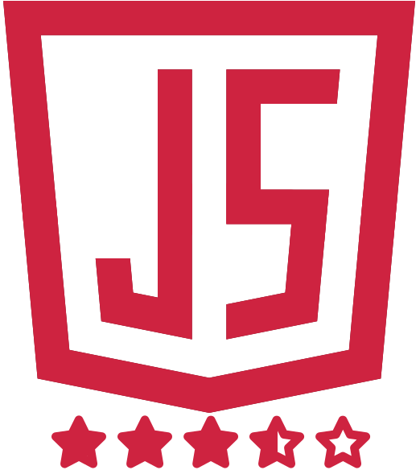
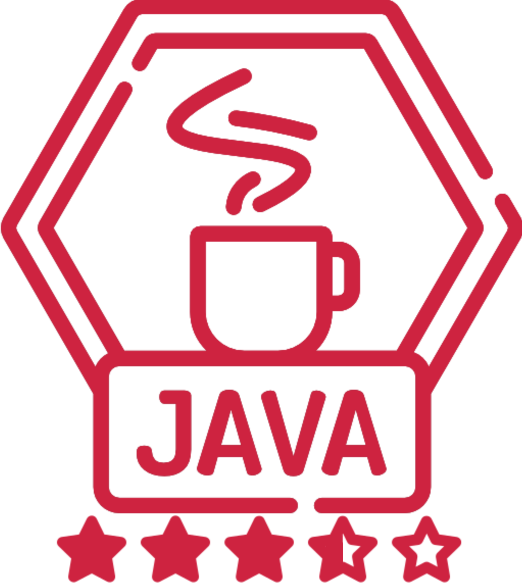

Desenvolvedor web
Olá, meu nome é João. Sou uma pessoa calma e tranquila, amo jogar videogames, frequentar a academia, ler e passar o tempo me atualizando sobre os novos assuntos da tecnologia. Tenho 23 anos e trabalho na área de TI há 4 anos. Sou natural de Passo Fundo, Rio Grande do Sul, mas já morei em várias outras localidades e sou flexível quanto a mudanças.
Atualmente estou cursando Ciência da Computação na ATITUS Educação, anteriormente conhecida como IMED, em Passo Fundo. Iniciei minha jornada nesta área estudando Gestão da Tecnologia da Informação em Itapiranga, Santa Catarina, onde morei por algum tempo.
Apesar de não ter tido contato profissional com as tecnologias, em meu tempo livre já abordei temas de estudo como automação e IA com python, segurança e penTest no Kali, spring boot e angular.
Na minha carreira de desenvolvedor, já tive experiência em desenvolvimento tanto back-end quanto front-end, no geral em projetos de e-commerce. Busco sempre me atualizar e aprender coisas novas na área. Atualmente estou aberto a novas oportunidades para me desenvolver profissionalmente da melhor forma.
Aqui listei meu nível de experiência em aglumas das tecnologias que mais tive contato em ambiente profissional:
 Compass UOL
Comecei minha jornada na Compass UOL em outubro de 2019 como desenvolvedor ATG. Durante meu tempo lá, tive a oportunidade de trabalhar em vários projetos de e-commerce de grandes clientes da empresa. Meu papel incluía desenvolver novas funcionalidades, corrigir bugs e realizar análises de código. Utilizei tecnologias como Java, JavaScript, SQL, CSS e JSP para desenvolvimento. Embora o meu foco principal fosse o back-end, também tive a oportunidade de trabalhar com front-end devido à natureza do ATG.
UCEFF Premium Consultoria
Como consultor júnior de TI na UCEFF Premium Consultoria, tive a oportunidade de aplicar meus conhecimentos em tecnologia da informação. Minhas responsabilidades incluíam ajudar no desenvolvimento de pequenos sites e trabalhar com marketing digital. Durante meu tempo lá, utilizei tecnologias como PHP, JavaScript, Jquery, Bootstrap, CSS, GIMP e Photoshop para criar soluções personalizadas e eficientes para nossos clientes.
SEARA Alimentos
Durante meu tempo na Seara Alimentos em Itapiranga, SC, tive como foco a gestão de pessoas, sendo responsável direto pelo acompanhamento do programa 5S, sendo em sua maioria através dos sistemas de gestão utilizados pela empresa mas também em parte acompanhando auditorias internas. Pude fortalecer tanto minha habilidade em trabalhar com pessoas, resolução de problemas e tomada de decisões quanto organização e comunicação em prol da melhoria nos processos da empresa.
Será um prazer receber seu contato, fique à vontade!
joaogabrieldallago@hotmail.com
@joao_dallago
(54) 99708 9779
Github jgdlago